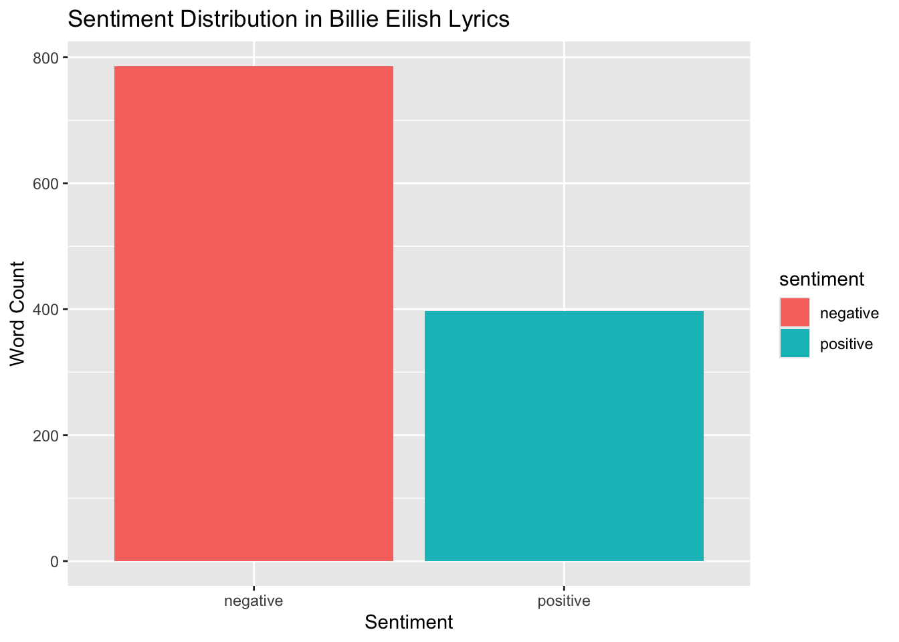
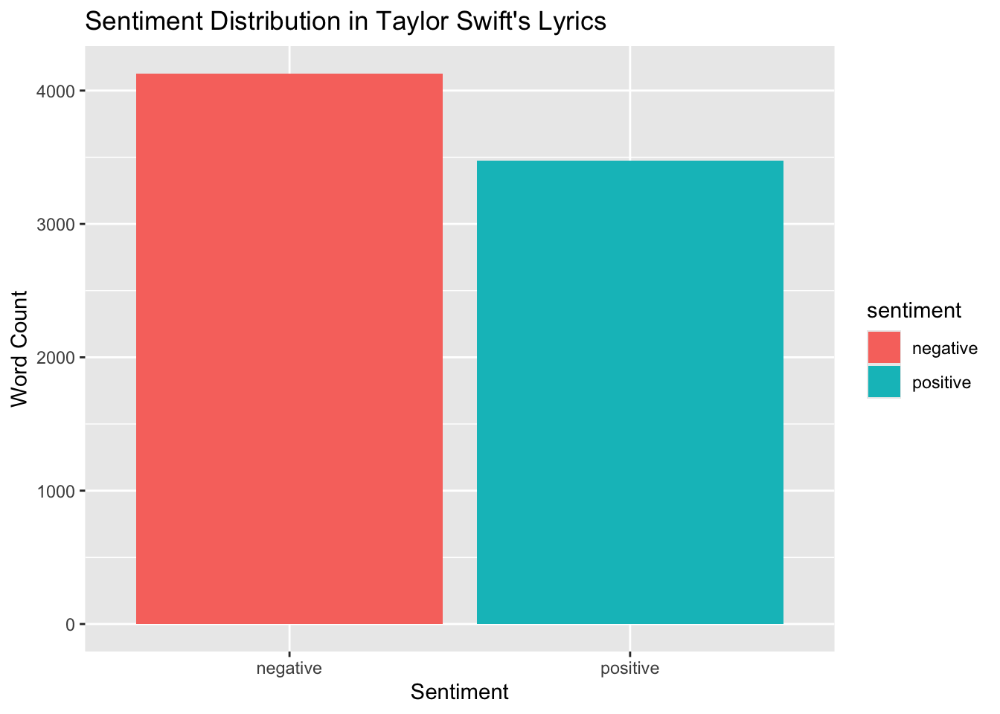
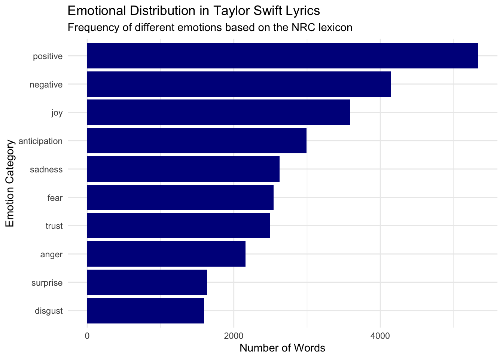

billie_clean <- billie|>
mutate(line = row_number(),
Lyric_clean = str_to_lower(Lyric), #lower case
lyrics = str_remove_all(Lyric_clean, "[^a-z\\s]"),#rem all no letter/space
lyrics = str_squish(lyrics)) |> #remove any removed space
filter(Album != "") |> #not named album removed
unnest_tokens(word, lyrics) |> #tokenizing
anti_join(Billie_stop, by = "word")|> #snowball stopwords
anti_join(Billie_smart, by = "word") #smart stopwordsCeline Mini Project
##links to Data sets
Data Tidying
Introduction
Music is often described as an emotional outlet,shaping and reflecting how listeners experience love, loss, fear, and joy. Among many around the world; the artists, Billie Eilish and Taylor Swift are frequently contrasted in public perception: Billie Eilish is often characterized as dark, introspective, and melancholic, while Taylor Swift is commonly associated with storytelling, romance, and emotional evolution across distinct “eras.” But do these perceptions hold up under systematic text analysis?
This project compares the lyrical content of Billie Eilish and Taylor Swift using two datasets of their song lyrics. Through string processing, regular expressions, and sentiment analysis techniques, I examine whether their music differs in measurable ways, specifically in overall sentiment (positive vs. negative), emotional categories (such as joy, sadness, fear, and anger), and recurring thematic patterns.This study aims to investigate whether one artist’s music is truly “happier” or “sadder,” or whether the emotional differences are more complex than cultural narratives suggest.
Billie
First, we will tidy the Billie Eilish dataset by removing unnecessary words and tokenizing the text
To explore romantic themes in the lyrics regular expressions will be used to detect words such as “love”, “heart”, and “baby” for Billie
# A tibble: 13 × 10
Album love lover baby heart heartbeat loves lovelove hearts total
<chr> <int> <int> <int> <int> <int> <int> <int> <int> <dbl>
1 dont smile at … 29 3 0 4 0 1 2 0 36
2 Unreleased Son… 26 0 5 1 1 2 0 0 32
3 WHEN WE ALL FA… 15 0 4 1 0 0 0 0 20
4 Live at Third … 12 3 0 0 0 0 0 0 15
5 Six Feet Under… 13 0 0 0 0 0 0 0 13
6 dont smile at … 9 4 0 0 0 0 0 1 13
7 BE2* 10 0 0 0 0 0 0 0 10
8 Up Next Sessio… 1 3 0 4 0 0 0 0 8
9 Billie Eilish … 4 0 0 0 0 0 0 0 4
10 party favor / … 3 0 0 0 0 0 0 0 3
11 13 Reasons Why… 2 0 0 0 0 0 0 0 2
12 92nd Academy A… 2 0 0 0 0 0 0 0 2
13 No Time To Die… 1 0 0 0 0 0 0 0 1Tibble 1 displays the number of words related to “love,” “baby,” and “heart” used in Billie Eilish’s lyrics by album. Each row represents an album, while the columns show the counts of different variations of these words and their total frequency. The album Do Not Smile at Me contains the highest total with 36 words related to love, while Party Favor and Hotline contain the fewest. Overall, the totals suggest that love-related words appear relatively infrequently across the albums, indicating that Billie Eilish’s songs do not heavily focus on traditional love themes
Now Dark theme in the lyrics will be discovered
# A tibble: 11 × 16
# Groups: Album [11]
Album bodies cry crying dark night oldie sad sadwhat death die tonight
<chr> <int> <int> <int> <int> <int> <int> <int> <int> <int> <int> <int>
1 Live… 1 4 1 2 1 1 6 1 0 0 0
2 Ocea… 0 17 0 0 0 0 0 0 0 0 0
3 No T… 0 3 0 0 0 0 0 0 3 5 0
4 WHEN… 0 1 1 2 2 0 2 0 0 1 0
5 Unre… 0 2 1 1 0 0 4 0 0 1 0
6 Six … 0 0 0 0 1 0 0 0 0 5 2
7 dont… 1 3 0 0 0 0 3 0 0 0 0
8 dont… 1 0 0 0 0 0 4 0 0 0 0
9 Up N… 1 3 0 0 0 0 0 0 0 0 0
10 part… 0 0 0 0 3 0 0 0 0 0 0
11 WHEN… 0 0 0 0 0 0 0 0 0 0 0
# ℹ 4 more variables: died <int>, sadly <int>, nightmare <int>, total <dbl>Tibble 2 shows the number of dark-themed words (such as “dark,” “night,” “death,” “die,” “sad,” and “cry”) used in Billie Eilish’s lyrics across different albums. Each row represents an album and includes counts of these word variations along with a total. The album Live at Third Man Records has the highest total with 17 dark-themed words, while Party Favor / Hotline Bling has the lowest with 5, which was also the lowest count for the love theme. Overall, the use of dark-themed words appears lower than the use of love-related words in the dataset, which is somewhat surprising given Billie Eilish’s reputation for darker lyrical themes
Taylor
The same Tidying process will be done for Taylor Swift.
taylor_clean <- Taylor|>
mutate(line = row_number(),
Lyric_clean = str_to_lower(Lyric), #lower case
lyrics = str_remove_all(Lyric_clean, "[^a-z\\s]"),#rem all no letter/space
lyrics = str_squish(lyrics)) |> #remove any removed space
filter(Album != "") |> #not named album removed
unnest_tokens(word, lyrics) |> #tokenizing
anti_join(Billie_stop, by = "word")|> #snowball stopwords
anti_join(Billie_smart, by = "word") #smart stopwordsTo explore romantic themes in the lyrics regular expressions will be used to detect words such as “love”, “heart”, and “baby” for Taylor
# A tibble: 48 × 32
Album baby exlovers heart heartbeats heartbreakers hearts love loves exlove
<chr> <int> <int> <int> <int> <int> <int> <int> <int> <int>
1 "Unr… 77 0 42 0 0 3 125 13 0
2 "198… 32 6 3 1 3 1 77 2 0
3 "Lov… 29 0 4 0 0 1 44 0 0
4 "Red… 2 0 5 0 0 3 31 2 0
5 "rep… 33 0 15 0 0 2 21 4 2
6 "Tay… 35 2 1 0 2 1 29 2 1
7 "Vol… 15 0 9 0 0 0 19 7 0
8 "Tay… 7 0 11 0 0 0 16 0 0
9 "Spe… 3 0 2 0 0 0 24 0 0
10 "198… 13 1 0 0 0 0 23 0 1
# ℹ 38 more rows
# ℹ 22 more variables: heartbreak <int>, lighthearted <int>, loved <int>,
# heartbeat <int>, lover <int>, gloves <int>, heartbreaks <int>,
# lovely <int>, lovestruck <int>, heartdelicate <int>, sweetheart <int>,
# heartstrings <int>, lovebirds <int>, lovers <int>, heartache <int>,
# babylon <int>, clover <int>, beloved <int>, heartstopping <int>,
# babys <int>, getlovequickschemes <int>, total <dbl>Tibble 3 shows the frequency of love-related words such as “love,” “baby,” and “heart” in Taylor Swift’s lyrics by album. Each row represents an album, while the columns display counts of variations of these words and a total for each album. The album 1989 has the highest total with 85 love-related words, while Speak Now (Deluxe) has the lowest of 10. Overall, the results show that love-related words appear frequently across Taylor Swift’s albums, highlighting the strong presence of love themes in her lyrics
Time theme in the lyrics will be discovered as well
# A tibble: 49 × 43
Album `break` breakdown crying crystal forever forevermore heartbreakers
<chr> <int> <int> <int> <int> <int> <int> <int>
1 "Red (Del… 11 9 0 0 3 0 0
2 "Unreleas… 10 0 8 0 7 0 0
3 "Taylor S… 15 0 2 0 9 1 2
4 "folklore… 1 0 2 0 3 0 0
5 "folklore" 1 0 2 0 3 0 0
6 "reputati… 7 0 0 0 4 1 0
7 "Speak No… 6 3 1 0 12 0 0
8 "Speak No… 6 3 1 0 13 0 0
9 "2004-200… 0 0 0 0 3 0 0
10 "Fearless" 3 0 2 0 8 0 0
# ℹ 39 more rows
# ℹ 35 more variables: past <int>, remember <int>, sad <int>, time <int>,
# times <int>, cry <int>, heartbreak <int>, memory <int>, breaks <int>,
# breaking <int>, breakable <int>, breakfast <int>, heartbreaks <int>,
# remembering <int>, saddest <int>, parttime <int>, pastel <int>,
# pastry <int>, remembered <int>, pesadelos <int>, sentimento <int>,
# pasadena <int>, breakup <int>, anytime <int>, memoryll <int>, …Tibble 4 shows the frequency of time- and emotion-related words such as “sad,” “break,” “cry,” “time,” “memory,” “remember,” “past,” and “forever” in Taylor Swift’s lyrics by album. Each row represents an album, while the columns display the counts of variations of these words along with a total for each album. The album Red (Deluxe Edition) has the highest total with 79 words, while 2004–2005 Demo CD has the lowest with 9. Overall, these words appear frequently across Taylor Swift’s albums, suggesting that themes of time, memory, and emotional reflection are common in her lyrics
Text Analysis
To figure out the most common used words by the two artists
![Figure 1 is a faceted horizontal bar chart comparing the ten most frequent words used in song lyrics by Billie Eilish and Taylor Swift. The x-axis represents the frequency of each word, ranging from approximately 0 to 250 occurrences, while the y-axis lists the individual words. The chart is split into two panels, one for Billie Eilish and one for Taylor Swift. Billie Eilish’s most frequent words include “ocean,” “eyes,” and “love,” while Taylor Swift’s most common words include “love,” “time,” and “back.” Overall, both artists frequently use emotionally neutral or relationship-focused words, suggesting that the most common vocabulary in their lyrics does not strongly emphasize either positive or negative sentiment](Mini_Project_files/figure-html/unnamed-chunk-12-1.png)
After identifying their most common words, we will analyze the sentiments of the lyrics to better understand the emotional themes present in the songs of Billie Eilish and Taylor swift


The sentiment analysis reveals a noticeable difference in the overall emotional tone of the two artists’ lyrics. Billie Eilish’s songs show a strong prevalence of negative sentiment words, roughly twice as many as positive words, suggesting her lyrics lean toward darker and more introspective themes. In contrast, Taylor Swift’s lyrics exhibit a more balanced sentiment distribution, with positive and negative words appearing at similar levels, indicating that her songs convey a mix of emotions but tend toward more uplifting or reflective content. These patterns support the perception that Billie often explores melancholy or complex emotions, while Taylor emphasizes narrative storytelling with a wider emotional range, including love, joy, and anticipation.
Now, we will analyze the emotions expressed in the lyrics of Billie Eilish and Taylor Swift by applying sentiment analysis. This allows us to identify the emotional tone present in the words used throughout the songs.
![Figure 3 shows a horizontal bar chart displaying the distribution of emotional categories in lyrics by Billie Eilish using the NRC sentiment lexicon. The x-axis represents the number of words associated with each emotion, while the y-axis lists the emotion categories. Negative sentiment appears most frequently with roughly 1,250 words, followed by positive sentiment at around 1,050. Among specific emotions, sadness and fear are the most common, each appearing close to 900 words. Joy and anticipation occur moderately often at approximately 700 words each, while anger, trust, and disgust appear around 550–650 words. Surprise is the least frequent emotion](Mini_Project_files/figure-html/unnamed-chunk-15-1.png)

The figures show clear differences in the emotional tone of the two artists’ lyrics. Billie Eilish’s lyrics contain more negative emotions, with sadness and fear appearing most frequently. This suggests that her songs often explore darker or more introspective themes. In contrast, Taylor Swift’s lyrics show a higher level of positive sentiment, with joy and anticipation appearing most often. This indicates that while both artists express a range of emotions, Taylor Swift’s lyrics tend to emphasize more positive themes compared to Billie Eilish’s.
To better understand we will make a wordcloud for both artists as a final conclusion
Joining with `by = join_by(word)`
Joining with `by = join_by(word)`Joining with `by = join_by(word)`
Joining with `by = join_by(word)`The text analysis reveals clear differences in the lyrical themes of Billie Ellish and Taylor Swift. Billie Eilish’s songs lean toward darker, more introspective content, with negative sentiments like sadness and fear appearing most frequently. Love-related words are present in her lyrics, though less dominant, showing that her songs are not entirely devoid of romantic themes. Taylor Swift’s lyrics, in contrast, are more positive and reflective, with joy, anticipation, and love-related words appearing frequently across albums. Time- and memory-related words also appear prominently, highlighting her narrative and storytelling style. Word clouds for both artists reinforce these patterns, showing that Billie often focuses on emotional intensity and introspection, while Taylor emphasizes relationships, personal growth, and optimism. Overall, the analysis demonstrates that while both artists explore a wide emotional range, their thematic focus and emotional tone differ in measurable ways. Notably, Billie’s use of love language suggests that a closer examination of the correlation between love-related words and other emotions could provide deeper insights. With the current data, one could argue that both Billie Eilish and Taylor Swift have happy or romantic songs in general, though Taylor’s lyrics contain a higher proportion, even amid Billie’s darker themes.